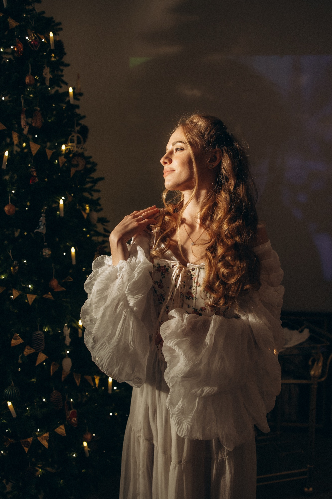
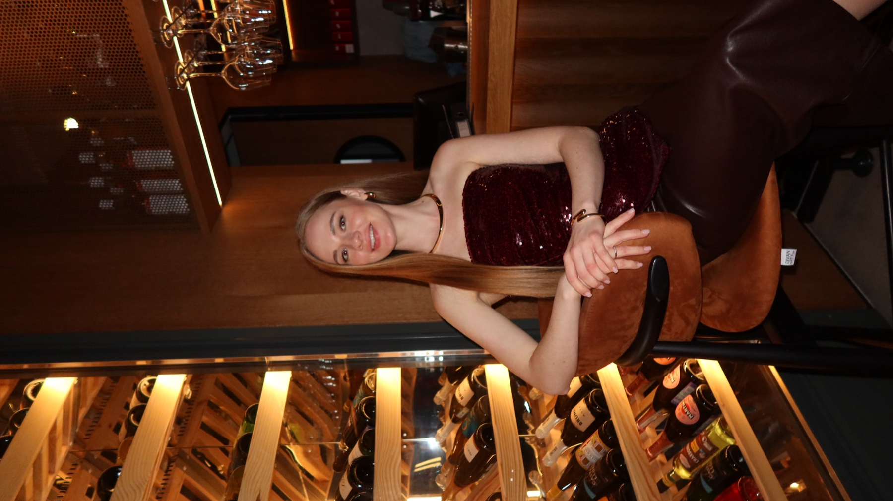
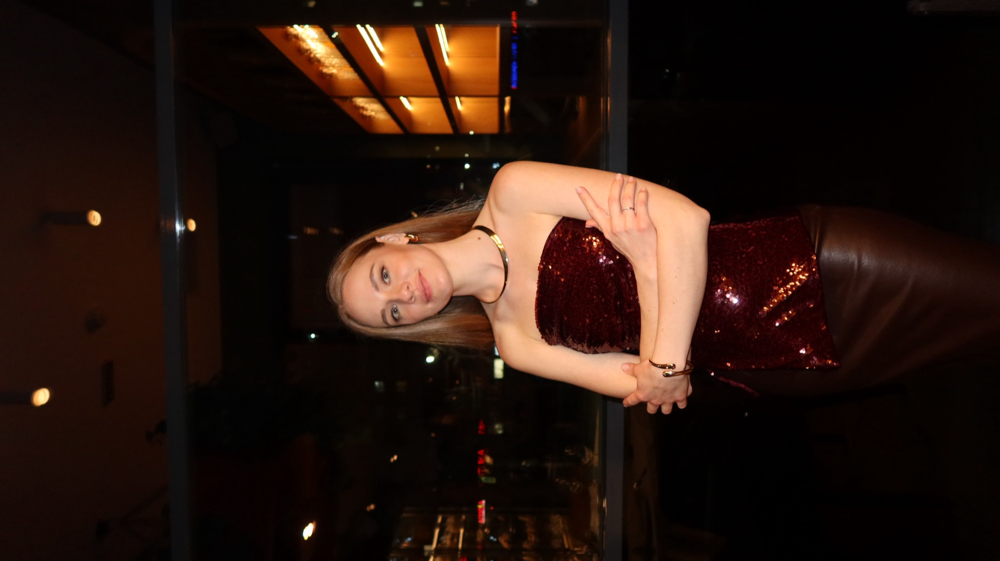
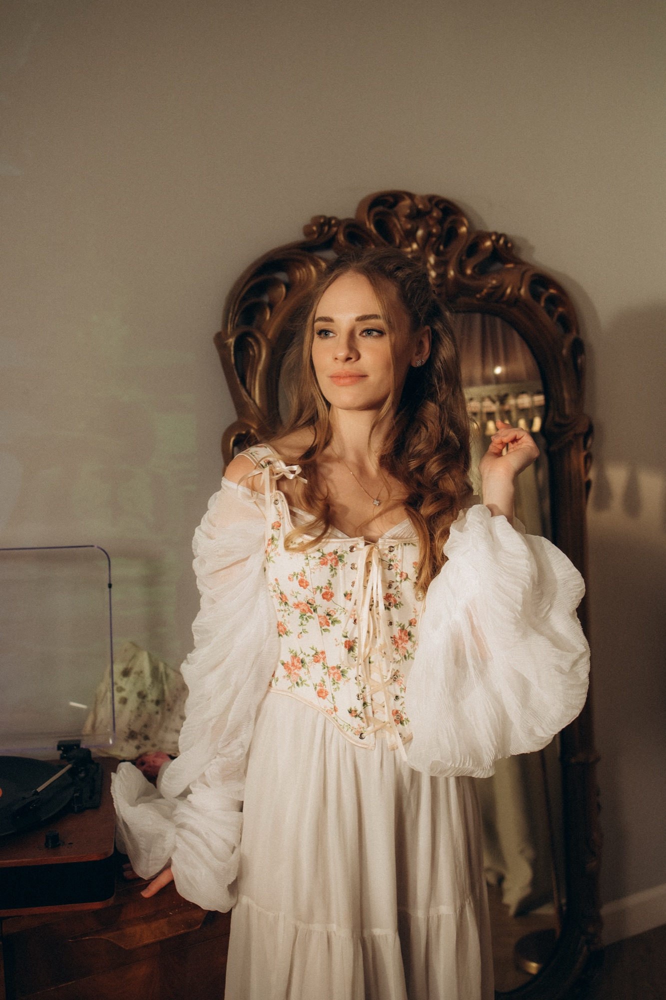

Краснодарский Политехнический Техникум
Дизайнер · Бакалавр
Художник
Еще в детстве я была погружена в мир искусства.
Меня всегда привлекала возможность через образ передавать чувства, настроение и собственное восприятие мира.


Мой профессиональный путь начался с дизайна и маркетинга, я занималась графическим и видеодизайном, созданием фирменной полиграфии и сайтов, работала с визуальной коммуникацией и проводила маркетинговые исследования компаний.
Этот опыт стал важной частью моего художественного становления.
Дизайн научил меня видеть композицию, форму, цвет, ритм и визуальный баланс. Маркетинг — понимать человека, его эмоции, ассоциации и то, каким образом образ способен вступать с ним в диалог.
Видеодизайн и видеографика дали мне особое ощущение движения, кадра и визуального повествования.
Все эти знания постепенно сформировали мой собственный способ видеть и создавать образ — и впоследствии естественным образом перешли в живопись.
Дизайнер · Бакалавр
Маркетинг · Бакалавр
Профессиональные направления:
Графический дизайн · Видеодизайн · Видеографика · Фирменный стиль и полиграфия · Веб-дизайн · Маркетинговые исследования
С 2026 года: профессиональное развитие в сфере живописи и создание авторского художественного направления.
Мой опыт в дизайне и маркетинге сегодня является частью моей художественной практики: он помогает мне выстраивать композицию, работать с визуальным образом и понимать эмоциональное взаимодействие произведения со зрителем.


С 2026 года я с головой погрузилась в мир живописи.
Практически с первого холста появилась моя первая картина — «Нежность».
Я не воспринимаю этот момент как начало совершенно нового пути. Скорее, это продолжение всего того визуального опыта, который накапливался во мне годами.
То, что раньше существовало в графике, дизайне и видеографике, получило в живописи новую форму — более свободную, эмоциональную и осязаемую.
Мои работы начали получать глубокий эмоциональный отклик у зрителей и принимать участие в выставках и тематических художественных мероприятиях.
«Живопись стала новой формой всего визуального опыта, который накапливался во мне годами».
В основе моей живописи лежит эмоциональный образ. Мне важно не столько буквально воспроизвести окружающий мир, сколько передать то, как он ощущается.
Поэтому в моих работах особое значение приобретает фактура.
Я работаю выразительным, пластичным мазком, позволяя краске оставаться живой и материальной. Поверхность холста становится частью образа: мазок может передавать движение волос, мягкость ткани, тепло солнечного света, фактуру земли или шероховатость природной формы.
Фактура для меня — это не декоративный прием. Это способ сделать изображенный мир осязаемым.
Мои работы находятся на границе между фигуративной живописью, эмоциональным реализмом и авторской декоративностью.
В них узнаваемый образ соединяется с более свободным, почти сказочным восприятием пространства.
В одних работах я использую теплые землистые, охристые, коричневые и молочные оттенки, создавая ощущение памяти, природы и внутреннего тепла.
В других появляется воздушная голубая гамма, солнечный свет, зелень, теплые оттенки кожи — и пространство картины становится более легким, свободным и наполненным ощущением детства.
Особое место в моей живописи занимает фактурность.
Я люблю, когда мазок можно буквально почувствовать взглядом.
Когда поверхность картины напоминает ткань, землю, камень, волосы, облако или движение воды.
Фактура создает дополнительное измерение произведения.
Картина становится не только визуальной, но и почти тактильной.
Зрителю хочется не просто смотреть на нее, а ощущать ее поверхность воображением.
В этом я вижу связь с моим прошлым в дизайне: я всегда воспринимала визуальный образ как систему, где каждая деталь имеет значение.
В живописи эта система становится свободнее.
Здесь я позволяю себе нарушать правила, менять масштаб, усиливать цвет, преувеличивать фактуру и подчинять форму эмоции.